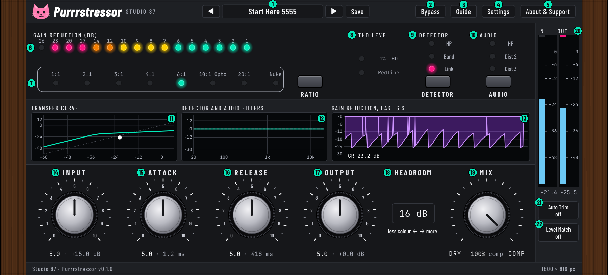

Purrrstressor
Manual for version 0.1.0. Studio 87. Free and open source (AGPL-3.0-or-later). Collects nothing, never uses the network.
A cat-themed compressor in the style of the Empirical Labs Distressor: our own DSP, written from the public manuals.

Quick start
- Put Purrrstressor on a track. The first preset, Start Here 5555, is 6:1 with every knob at 5.
- Raise Input until the gain reduction ladder moves. Ratio and Release matter most.
- Compare with Bypass (B). Turn on Level Match for a fair comparison, and off again when done.
- For parallel compression, lower Mix. For colour, pick Dist 2 or Dist 3 and change Headroom.
Signal flow
Input amp, Input level, gain stage, Distortion, Audio high-pass, Output level, Output amp. The detector (high-pass and band emphasis) steers the gain stage. By default it listens just after Input, which is stable at every setting. In Settings you can move it after the distortion, as in the hardware diagram; that is a feedback loop, so very fast attacks at 20:1 and Nuke become a little slower.
The input and output amps are slightly non-linear and their amount follows Headroom. The added distortion is anti-aliased (ADAA), so there is no oversampling and no latency.
Interface tour
Numbers in the picture match the table.
| # | Control | What it does | Range | Default |
|---|---|---|---|---|
| 1 | Preset bar | Arrows step through presets. The name opens the preset browser (search, type chips, load, export, edit, delete). Double-click the name to rename one of your own. Save stores the current settings as your own preset and asks before overwriting. | Start Here 5555 | |
| 2 | Bypass | Hear the dry signal to compare with the processed sound (shortcut B). The gain reduction meter keeps moving, like the hardware. Switching is crossfaded, no clicks. | on / off | off |
| 3 | Guide | Short guide and keyboard shortcuts. | ||
| 4 | Settings | Info bubbles, power saving, colour look (A neon navy, B purple soda pop, C charcoal) and the detector tap. | Look C, bubbles on, tap after Input | |
| 5 | About & Support | Version, licence, where your presets live, optional Ko-fi link. | ||
| 6 | Gain reduction ladder | Sixteen LEDs, 1 to 26 dB of gain reduction. Green up to 6 dB, yellow 7 to 10, orange 12 to 14, pink from 17. | 0 to 26 dB | |
| 7 | Ratio | Eight ratios: 1:1 saturation only, no compression.; 2:1 long gentle knee.; 3:1 gentle knee.; 4:1 general purpose.; 6:1 a good place to start.; 10:1 Opto, program dependent release up to about 20 s.; 20:1 hard limiting curve.; Nuke: brick wall limiting. Click an LED or its label, or use the button: Next ratio. Shift for the previous one. Careful: going to 1:1 while compressing hard makes the level jump. | 1:1 to Nuke | 6:1 |
| 8 | THD level | Two indicators (not buttons). 1% THD lights when the added distortion reaches about 1%. Redline lights at about 3% THD and also when the output clips. Both look at the input stage and the distortion stages. | ||
| 9 | Detector | What the detector listens to. Detector high-pass, 100 Hz, 6 dB per octave: stops low rumble and plosives from triggering compression. Band emphasis: the detector listens harder around 6 kHz, so harsh upper mids get compressed more. Stereo link: both channels share the same gain reduction. Button: Cycle the detector modes in the hardware order: Norm, HP, Band, HP+Band, Link, Link+HP, Link+Band, all. | HP, Band, Link | Link on |
| 10 | Audio | Audio high-pass: 18 dB per octave Bessel, about -3 dB at 60 Hz. Cleans rumble from the sound you hear. Dist 2: adds mostly 2nd harmonic, warm like an overdriven tube. More while compressing. Dist 3: 3rd harmonic dominant with some 2nd, tape-like when pushed. Button: Cycle the audio modes: Norm, HP, Dist 2, Dist 2+HP, Dist 3, Dist 3+HP. | Norm, HP, Dist 2, Dist 3 | Norm |
| 11 | Transfer curve | Input level (across) against output level (up). The curve follows Ratio, Input and Output. The dot is the live signal. | -60 to +6 dB across | |
| 12 | Detector and audio filters | Solid line: what the detector listens to (high-pass and band emphasis). Dashed pink: the audio high-pass. | 20 Hz to 20 kHz | |
| 13 | Gain reduction history | How much the compressor turned the signal down, over the last six seconds. | 0 to 30 dB | |
| 14 | Input | Input gain and threshold together. Drive harder for more compression and more colour. | 0 to +30 dB (knob 0 to 10) | knob 5 = +15 dB |
| 15 | Attack | How fast compression grabs. 0 is fastest (50 microseconds), 10 is slowest (30 ms). Slow it down to keep drum punch. At 2:1, 3:1 and 4:1 the attack is a little faster than the knob says (our choice). | 50 us to 30 ms | knob 5 = 1.2 ms |
| 16 | Release | How long compression lets go. 0 is fastest (50 ms), 10 is slowest (3.5 s). In 10:1 Opto it stretches with the depth of compression, up to about 20 s. | 50 ms to 3.5 s | knob 5 = 418 ms |
| 17 | Output | Output level after the compressor. 5 is 0 dB. Level Match overrides it while on. | -24 to +24 dB | knob 5 = 0 dB |
| 18 | Headroom (HR) | As in the hardware manual: higher dB pushes the circuit into more processing and colour, lower dB keeps it cleaner. Only matters with Dist 2 or Dist 3. Click to step up, shift-click to step down, double-click to reset. | 4 to 28 dB in 4 dB steps | 16 dB |
| 19 | Mix | Blend of the dry signal and the processed signal for parallel compression. Click DRY or COMP under the knob to jump to either end. | 0 to 100 % | 100 % |
| 20 | In and Out meters | Peak level, -60 to +6 dB. Blue up to -12, purple up to 0, pink above. The strip top marks a clip until you click it. | -60 to +6 dB | |
| 21 | Auto Trim | If the output ever reaches 0 dB, the output is turned down by that overshoot plus 0.1 dB and stays there. It never turns back up by itself. The readout turns pink once it has trimmed. Click twice (off, on) to reset. | on / off | off |
| 22 | Level Match | Slowly adjusts the output so the processed sound is as loud as the dry sound, for a fair comparison (louder always sounds better). Overrides the Output knob while on. Turn it off when you are done comparing. | on / off | off |
Presets
14 factory presets are built in. Your own presets are plain text files you can back up or share:
- Linux:
~/.local/share/Studio 87/Purrrstressor/presets - Windows:
%APPDATA%\Studio 87\Purrrstressor\presets - macOS:
~/Library/Application Support/Studio 87/Purrrstressor/presets
Export and Import in the preset browser use plain text you can paste anywhere. A preset does not change Bypass. The loaded preset name and the plugin settings (look, bubbles, power saving, detector tap, window size) are saved with the project.
Keyboard and mouse
| B | Bypass on or off |
| R / Shift+R | Next or previous ratio |
| D | Cycle detector modes (Norm, HP, Band, HP+Band, Link, Link+HP, Link+Band, all) |
| A | Cycle audio modes (Norm, HP, Dist 2, Dist 2+HP, Dist 3, Dist 3+HP) |
| Knobs | Drag up or down, mouse wheel, arrow keys. Hold Shift for fine steps. Double-click to reset. |
| Window | Drag any edge or corner. It keeps its proportions. Double-click the wood to go back to 100%. |
Keys work while the plugin window has keyboard focus; some hosts keep the focus for themselves.
Install and uninstall
- Linux: unpack the zip, run
install.sh(copies the VST3 to~/.vst3).uninstall.shremoves it and keeps your presets unless you answer yes. - Windows: run the installer. It puts the VST3 in the common VST3 folder and adds an uninstaller. Close your DAW first. Installing a new version over the old one works.
- macOS: open the package. The plugin goes to
/Library/Audio/Plug-Ins/VST3. The build is not notarised, so macOS may ask you to allow it in System Settings, Privacy and Security.
After installing, rescan plugins in your host.
Under the hood
From the public manuals: eight ratios (1:1, 2:1, 3:1, 4:1, 6:1, 10:1 Opto, 20:1, Nuke); attack 50 us to 30 ms; release 50 ms to 3.5 s (Opto up to about 20 s); detector high-pass 100 Hz at 6 dB per octave; detector band emphasis around 6 kHz; audio high-pass 18 dB per octave Bessel, about -3 dB at 60 Hz; Headroom 4 to 28 dB in 4 dB steps; the THD LEDs and Redline at about 3%; the signal order; Dist 2 mostly 2nd harmonic and Dist 3 mostly 3rd.
Our own choices (the manuals give no numbers): the knee width of each ratio, the shape of the Opto release curve, how much each distortion adds, the size of the +9 dB band boost, the amount of non-linearity in the input and output amps, the faster attack at 2:1 to 4:1, the loudness averaging of Level Match and the 0.1 dB step of Auto Trim. These are set by ear and may change in later versions; your saved projects keep loading.
Not modelled: the exact Link behaviour of the hardware in mono, and the way the hardware shifts the threshold with each ratio.
Licence and thanks
AGPL-3.0-or-later. Built with JUCE (AGPLv3). Fonts: Barlow Condensed and JetBrains Mono, SIL Open Font Licence 1.1 (texts in the source folder assets/fonts). Source: github.com/SpeakingColors/Purrrstressor. Optional support: ko-fi.com/studio87.